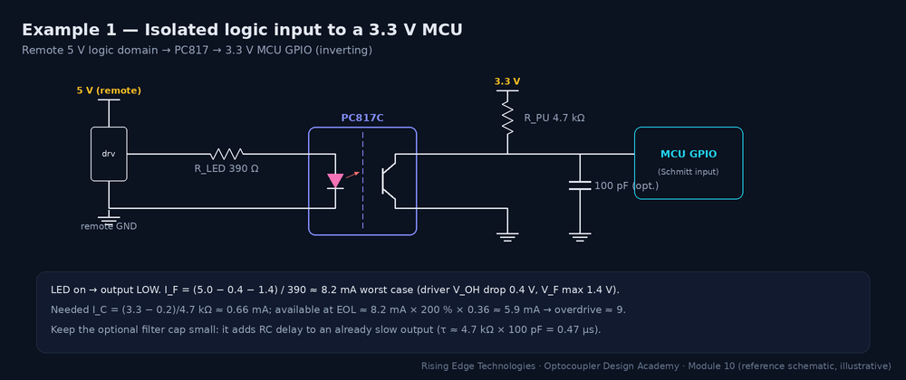
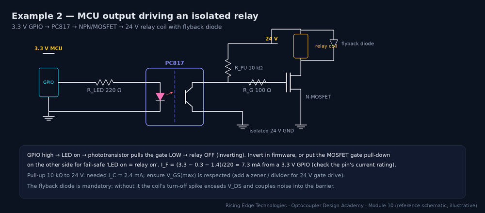
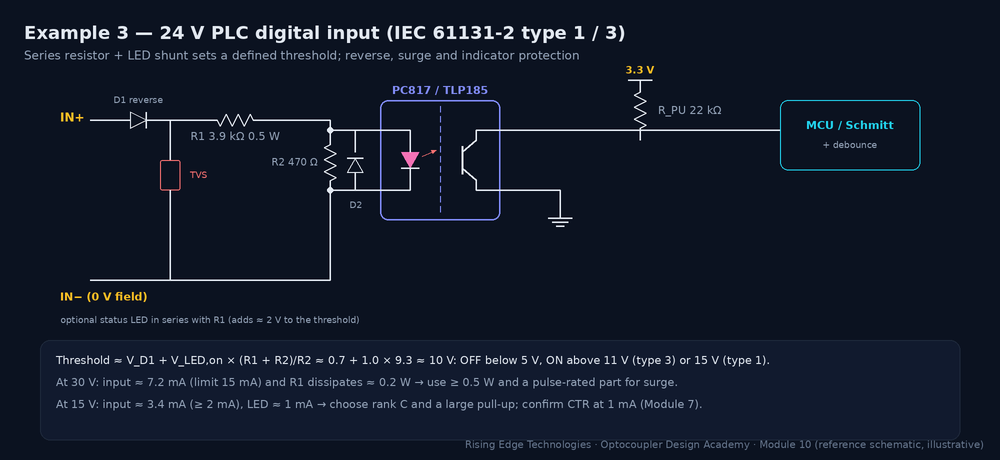
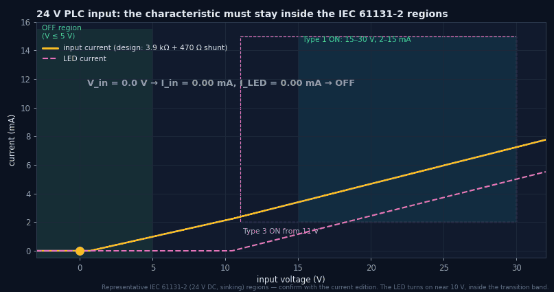
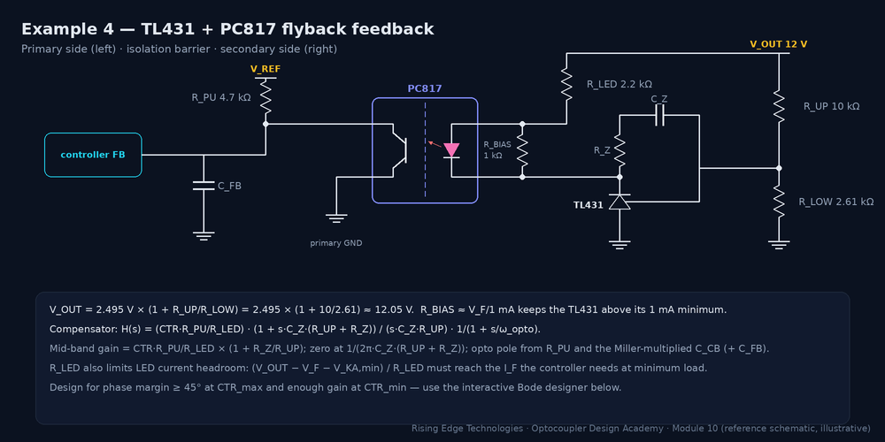
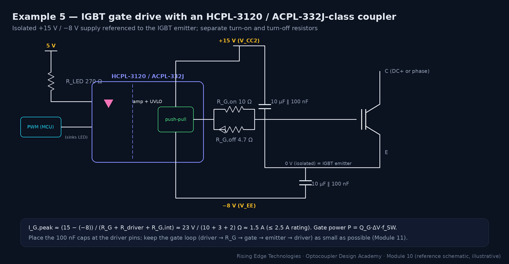
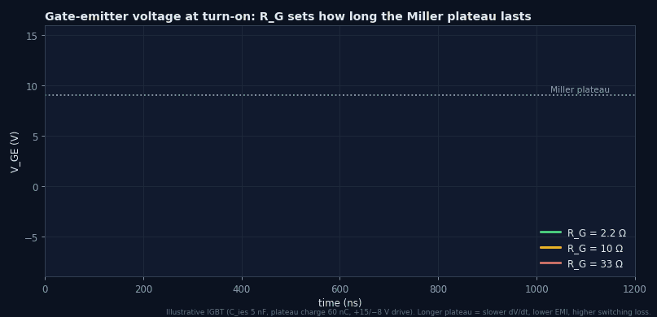
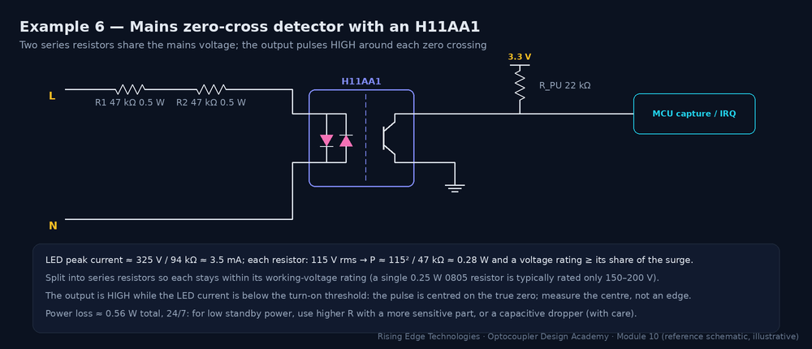
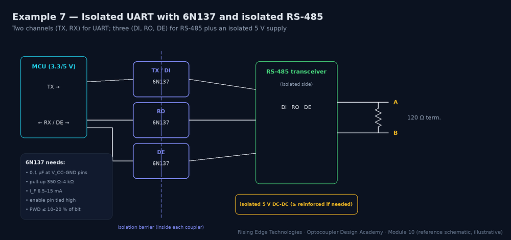

Optocoupler Design Examples
Complete, values-included reference designs: MCU input/output isolation, a 24 V PLC input channel with surge protection, TL431 + PC817 SMPS feedback with loop compensation, an IGBT gate-drive stage, mains zero-cross detection, and isolated UART/RS-485 links.
Illustrations and animations are original teaching drawings, not to scale. Values marked representative are typical of common parts; always confirm against the current datasheet or standard you design to.
Every example uses the same worst-case method, so you can reuse it for any interface:
Requirements
- Isolate a 5 V logic signal from a remote domain into a 3.3 V MCU
- Signal up to 5 kHz; industrial ambient to 70 °C; 10-year life
- Functional isolation, standard creepage

Step-by-step calculation (worst case)
Calculation
- IF,min = (5.0 − 0.4 − 1.4) / 390 Ω ≈ 8.2 mA (driver drop 0.4 V, VF,max 1.4 V). IF,max ≈ (5.25 − 1.0)/390 ≈ 10.9 mA: fine for life.
- IC,needed = (3.3 − 0.2)/4.7 kΩ ≈ 0.66 mA.
- CTREOL = 200 % (rank C) × 0.9 × 0.8 × 0.5 = 72 %; IC,avail = 8.2 × 0.72 ≈ 5.9 mA → k ≈ 9.
- Speed: τ ≈ 1.5 µs + 250 × 10 pF × 4.7 kΩ ≈ 13 µs → tr ≈ 30 µs: fine for 5 kHz. Deep overdrive adds a few µs of storage; acceptable here.
Bill of materials
| Ref | Part | Value / rating | Why |
|---|---|---|---|
| R1 | Resistor | 390 Ω, 1 % | Sets IF ≈ 8–11 mA |
| U1 | PC817C (rank C) or equivalent | SMD version for reflow | CTR 200–400 % |
| R2 | Resistor | 4.7 kΩ | Pull-up to 3.3 V |
| C1 | Capacitor (optional) | 100 pF | Glitch filter, adds ≈ 0.5 µs |
Layout notes
Keep the remote-side traces (LED loop) on the remote side of the barrier and the GPIO side on the MCU side; no copper crossing under the part. Pull-up close to the MCU. See Module 11 (PCB Design Guidelines).
Common mistakes
Designing with typical CTR
300 % “typical” hides a 50 % unranked minimum.
Huge pull-up to “save current”
47 kΩ makes edges > 200 µs.
Floating LED drive at reset
A tri-stated remote pin can leave the LED half-on.
Test and verification
- Measure ton/toff at max temperature
- Reduce IF to 50 % and confirm the output still saturates (EOL simulation)
- Check VOL ≤ VIL of the MCU at max IC
Requirements
- 3.3 V MCU switches a 24 V, 20 mA relay coil on an isolated 24 V supply
- Relay on/off at ≤ 10 Hz; fail-safe OFF at MCU reset

Step-by-step calculation (worst case)
Calculation
- IF,min = (3.3 − 0.3 − 1.4)/220 Ω ≈ 7.3 mA; check the GPIO current rating (typ. 8–20 mA per pin).
- Pull-up 10 kΩ to 24 V → IC,needed = 2.4 mA. Rank B at EOL: 7.3 × 1.3 × 0.36 ≈ 3.4 mA (k ≈ 1.4: marginal). Rank C: ≈ 5.3 mA (k ≈ 2.2).
- Gate: 24 V exceeds a typical ±20 V VGS,max. Use a 10 kΩ/10 kΩ divider (12 V gate) or a 15 V zener clamp.
- Coil 24 V / 1.2 kΩ = 20 mA; the MOSFET dissipates only I²RDS(on); the flyback diode clamps the turn-off spike.
Bill of materials
| Ref | Part | Value / rating | Why |
|---|---|---|---|
| R1 | Resistor | 220 Ω | IF ≈ 7–9 mA |
| U1 | PC817C | rank C | Margin at 24 V pull-up |
| R2/R3 | Divider | 10 kΩ / 10 kΩ | 12 V gate drive |
| Q1 | N-MOSFET | 60 V, logic-level not required | Relay switch |
| D1 | 1N4148 / 1N4007 | flyback | Clamps coil kick |
Layout notes
Put the relay coil, MOSFET and flyback diode in a tight loop on the 24 V side; keep the relay’s contacts and their creepage away from the optocoupler area. See Module 11 (PCB Design Guidelines).
Common mistakes
Forgetting the inversion
LED on = relay off in this topology; decide which state is fail-safe.
No flyback diode
Hundreds of volts of inductive kick.
24 V straight onto the gate
Destroys a ±20 V gate.
Test and verification
- Power-cycle the MCU and confirm the relay stays off during reset
- Scope VDS at turn-off with the diode fitted
- Run at max ambient with 50 % IF
Requirements
- 24 V DC current-sinking input, IEC 61131-2 type 1 or 3 (representative regions: OFF ≤ 5 V; ON 11/15–30 V at 2–15 mA)
- Reverse-polarity and surge tolerant (IEC 61000-4-5 level per product standard)
- Low self-heating: 16 inputs per module


Step-by-step calculation (worst case)
Calculation
- Threshold Vth ≈ VD1 + VLED·(R1 + R2)/R2 = 0.7 + 1.05 × 4370/470 ≈ 10.5 V.
- At 15 V: Iin ≈ (15 − 0.7 − 1.1)/3.9 kΩ ≈ 3.4 mA (≥ 2 mA); ILED ≈ 3.4 − 1.1/470 ≈ 1.0 mA.
- At 30 V: Iin ≈ 7.2 mA (≤ 15 mA); PR1 ≈ 0.2 W → 0.5 W part, pulse-rated for surge.
- Output: ILED ≈ 1 mA at the ON minimum. With CTREOL ≈ 70 % at 1 mA (rank C × low-current × temperature × ageing), IC ≈ 0.7 mA; a 22 kΩ pull-up needs 0.14 mA → k ≈ 5.
Bill of materials
| Ref | Part | Value / rating | Why |
|---|---|---|---|
| D1 | Diode | 1N4148 or S1x | Reverse polarity |
| TVS | SMBJ33A class | stand-off ≥ 30 V | Surge clamp |
| R1 | Resistor | 3.9 kΩ, 0.5 W, pulse-rated | Current limit / threshold |
| R2 | Resistor | 470 Ω | Threshold shunt |
| D2 | 1N4148 | anti-parallel | LED reverse protection |
| U1 | PC817C / TLP185 | rank C | Isolation |
| R3 | Resistor | 22 kΩ | Pull-up |
Layout notes
Field-side parts (D1, TVS, R1) at the connector; TVS return to the field 0 V with a short trace. Keep 24 V field copper out of the logic area; channel-to-channel spacing per the module’s isolation concept. See Module 11 (PCB Design Guidelines).
Common mistakes
No threshold shunt
Leakage from 2-wire sensors turns inputs on in the OFF region.
0.125 W resistor
Overheats with 16 channels at 30 V.
Relying on the TVS alone
The series resistor must survive surge current too.
Test and verification
- Sweep 0–30 V and plot Iin and the logic state (compare with Animation 1)
- Apply reverse 30 V and surge per the product standard
- Thermal image with all inputs on at 30 V
Requirements
- 12 V / 2 A flyback, current-mode controller with a 5 V-referenced FB pin (RPU internal or external 4.7 kΩ)
- Crossover ≈ 1–2 kHz; phase margin ≥ 45° over CTR spread and temperature
- Reinforced isolation mains → SELV (IEC 62368-1)

Step-by-step calculation (worst case)
Calculation
- VOUT = 2.495 × (1 + 10k/2.61k) ≈ 12.05 V.
- TL431 bias: RBIAS = VF/1 mA ≈ 1.2 kΩ → use 1 kΩ (keeps ≥ 1 mA in the TL431 even when the LED is off).
- LED headroom: max LED current = (12 − 1.2 − 2.5 VKA,min)/2.2 kΩ − 1.2 mA (bias) ≈ 2.6 mA. FB pull-down needs ≈ 5 V/4.7 kΩ ≈ 1.1 mA; at CTREOL 50 % that is 2.1 mA of LED current: OK.
- Compensator: G = CTR·RPU/RLED = 1.0 × 4.7/2.2 ≈ 2.1 (6.6 dB); mid-band ×(1 + RZ/RUP) = 4.3 (12.6 dB); zero at 1/(2π·10 nF·20 kΩ) ≈ 800 Hz.
- With a plant of 6 dB and a 200 Hz pole, crossover ≈ 1.7 kHz and PM ≈ 67° at CTR 100 %. At CTR 300 %, gain rises ≈ 9.5 dB: re-check PM (interactive below).
Bill of materials
| Ref | Part | Value / rating | Why |
|---|---|---|---|
| U1 | TL431 (0.5 % or 1 %) | VKA ≥ 2.5 V | Reference + error amp |
| U2 | PC817 (VDE option), narrow rank | reinforced package | Isolated error path |
| RLED | Resistor | 2.2 kΩ | Fast-lane gain |
| RBIAS | Resistor | 1 kΩ | TL431 min. current |
| RUP/RLOW | Resistors 0.1–1 % | 10 kΩ / 2.61 kΩ | Sets VOUT |
| RZ, CZ | R, C0G/X7R | 10 kΩ, 10 nF | Integrator + zero |
| CFB | Capacitor | ≤ 1 nF | Noise filter (adds a pole) |
Layout notes
The optocoupler straddles the transformer’s isolation slot; keep primary FB traces short and away from the switch node (dV/dt couples into the high-impedance FB node); keep the TL431 divider away from secondary rectifier noise. See Module 11 (PCB Design Guidelines).
Common mistakes
Compensating at typical CTR
At max CTR the loop gain is 3× higher: oscillation in some units.
Missing RBIAS
TL431 drops below 1 mA at light load: regulation fails.
Big CFB
Adds a low pole on top of the opto pole: phase margin collapses.
Test and verification
- Measure the loop with an injection transformer (e.g. 20–50 Ω injection resistor in the divider) at min/max load and line
- Repeat with a high- and a low-CTR sample, and at hot/cold
- Load-step test: overshoot and ringing consistent with the measured PM
Requirements
- Drive a 1200 V, 100 A IGBT module (QG ≈ 600 nC) at 10 kHz from an MCU PWM
- Reinforced isolation to the control side; DC bus 800 V; switching dV/dt up to ≈ 10 kV/µs (IGBT) or 50+ kV/µs (SiC)
- Short-circuit protection within ≈ 10 µs


Step-by-step calculation (worst case)
Calculation
- LED: IF = (5 − 1.8 − 0.3)/270 Ω ≈ 10.7 mA (within a typical 7–16 mA recommended range).
- Peak gate current ≈ (15 − (−8))/(10 + 3 + 2) Ω ≈ 1.5 A ≤ 2.5 A rating.
- Gate power = 600 nC × 23 V × 10 kHz ≈ 0.14 W; average supply current = QG·f = 6 mA: size the isolated DC-DC with margin.
- CMTI: IGBT at 10 kV/µs → a ≥ 25–35 kV/µs driver gives 2.5×+ margin. For SiC at 50–100 kV/µs choose a driver rated ≥ 100–150 kV/µs.
- DESAT: blanking time sized so detection completes within the module’s short-circuit withstand time (≈ 10 µs class).
Bill of materials
| Ref | Part | Value / rating | Why |
|---|---|---|---|
| U1 | HCPL-3120 / ACPL-332J class | reinforced, wide SO | Driver + isolation |
| RLED | Resistor | 270 Ω | IF ≈ 10 mA |
| RG,on/RG,off | Pulse-rated resistors | 10 Ω / 4.7 Ω | Edge-rate control |
| C1, C2 | Ceramic + bulk | 100 nF + 10 µF on each rail | Supply the gate-current peaks |
| RGE | Resistor | 10 kΩ gate–emitter | Holds off when unpowered |
| PS1 | Isolated DC-DC | +15/−8 V, ≥ 1 W, reinforced | Floating supply |
Layout notes
Minimise the gate loop area (driver → RG → gate → emitter → driver); use a Kelvin emitter connection; place 100 nF directly at the driver pins; keep the switch node away from the driver’s input side; respect the package creepage on the PCB with a slot if needed. See Module 11 (PCB Design Guidelines).
Common mistakes
No negative rail and no Miller clamp
dV/dt of the other switch turns this one on through CGC: shoot-through.
Bypass caps far away
Supply droop during the 1.5 A peak trips UVLO.
CMTI chosen for IGBT, used with SiC
False pulses at 50+ kV/µs.
Test and verification
- Double-pulse test: VGE, VCE, IC at max bus and current
- Short-circuit test with DESAT, verify soft turn-off
- CMTI check: look for glitches on the fault line during switching
Requirements
- Detect each zero crossing of 230 V / 50 Hz for TRIAC phase control or power metering
- Timing uncertainty < ±100 µs after calibration; reinforced isolation to the MCU

Step-by-step calculation (worst case)
Calculation
- LED peak current ≈ 325 V / 94 kΩ ≈ 3.5 mA; average (rectified) ≈ 2.2 mA.
- Each resistor: 115 Vrms → P ≈ 0.28 W; choose 0.5–1 W, voltage-rated ≥ its share of the surge (or 3 in series).
- Pulse width: output high while |Vline| < ≈ 30–50 V (depends on CTR, pull-up and threshold) → ≈ 2 × asin(40/325)/(2π·50) ≈ 0.8 ms.
- Timing: use the pulse centre (average of rising and falling edges). That cancels the symmetric widening and makes the result nearly independent of CTR.
Bill of materials
| Ref | Part | Value / rating | Why |
|---|---|---|---|
| R1, R2 | Resistors | 47 kΩ, 0.5–1 W, high-voltage rated | Current limit, voltage sharing |
| U1 | H11AA1 (or AC-input SMD) | reinforced option if required | Bidirectional input |
| R3 | Resistor | 22 kΩ | Pull-up |
| (opt.) C | Capacitor | 1–10 nF | Filter mains noise |
Layout notes
Mains-side resistors need creepage/clearance between them and to everything else (they carry line voltage). Keep the mains traces on the far side of the slot/barrier, with the resistors oriented along the high-voltage path. See Module 11 (PCB Design Guidelines).
Common mistakes
One small resistor
A 0805 resistor sees 325 V peak and overheats.
Timing from one edge
The edge moves with CTR and temperature.
Ignoring standby power
0.56 W forever can break an energy-efficiency budget.
Test and verification
- Scope the output against the mains (through a differential probe) and measure the centre error
- Hot/cold test of pulse width
- Surge test per the product standard
Requirements
- UART at 115.2 kbit/s (upgradeable to 1 Mbit/s) between a controller and a field device
- RS-485 variant: DI, RO, DE isolated, bus side powered by an isolated 5 V supply
- CMTI ≥ 2× the expected ground-shift dV/dt

Step-by-step calculation (worst case)
Calculation
- LED: IF = (3.3 − 0.3 − 1.75)/120 Ω ≈ 10 mA (inside the 6.5–15 mA recommended range).
- Pull-up 1 kΩ to 5 V: IOL ≈ 4.4 mA; tr ≈ 2.2 × 1 kΩ × 15 pF ≈ 33 ns.
- At 1 Mbit/s: bit = 1000 ns; PWD 35 ns + 33 ns edge ≈ 7 %: comfortable. At 115.2 kbit/s it is < 1 %.
- RS-485: DE must enable the driver before the first start bit; the coupler delay (≈ 75 ns) is negligible at these rates.
Bill of materials
| Ref | Part | Value / rating | Why |
|---|---|---|---|
| U1–U3 | 6N137 class | 10 MBd, 0.1 µF each | TX/DI, RO, DE |
| R | Resistors | 120 Ω (LED), 1 kΩ (pull-up) | IF and edges |
| U4 | RS-485 transceiver | fail-safe receiver | Bus interface |
| PS1 | Isolated DC-DC | 5 V, reinforced if needed | Bus-side power |
| RT | Termination | 120 Ω | At bus ends only |
Layout notes
Bypass each 6N137 with 0.1 µF at the pins; keep bus-side ground (and its large copper) away from the logic side; route the isolation gap straight under all couplers and the DC-DC. See Module 11 (PCB Design Guidelines).
Common mistakes
Pull-up too small
Exceeds IOL and raises VOL.
Floating enable pin
Noise gates the output.
Forgetting isolated power
The bus side needs its own supply.
Test and verification
- Eye/timing measurement at the maximum baud rate
- Common-mode transient test between grounds
- Bus fault tests (short, open, polarity)
One method, every interface
Worst-case IF, CTREOL, overdrive k ≥ 2, speed, isolation, layout, verification.
MCU I/O
Size RLED with VF,max and driver drop; mind the inversion and fail-safe state.
PLC inputs
A shunt resistor sets a clean threshold; watch resistor power and surge.
Feedback loops
CTR spread changes loop gain: design PM at CTRmax, regulation at CTRmin.
Gate drives
Bipolar supply, split RG, local bypass, CMTI margin, DESAT.
Zero-cross
Resistors carry mains power; time from the pulse centre.
Serial links
PWD + edge ≤ 10–20 % of a bit; bypass and pull-up per datasheet.
Verify at the corners
Hot, cold, low-CTR samples, 50 % IF as an EOL simulation.
Design checklist
Tick items as you review a design. Your ticks are saved in this browser only; use your browser’s print function for a sign-off copy.
Four parts: multiple choice, true/false, a matching exercise and engineering scenarios. Score 80 % on the multiple choice to pass the module.